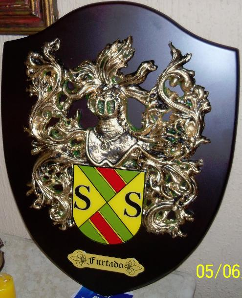
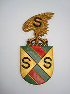
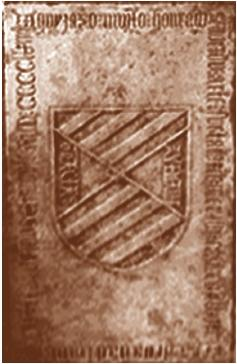
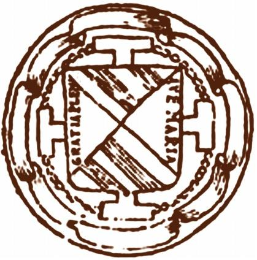

 |  |  |  |
| Brasão adotado em 18/05/2013 | Brasão moderno | Brasão medieval | Selo |
Raízes
Clã das famílias com ramificações a partir de Pedro Ferreira Furtado e suas esposas D. Maria Joana Paes Furtado e D. Margarida do Espírito Santo "Gaída" Furtado, bem como as ramificações centradas em D. Mariana dos Anjos Lima Furtado e D. Raimunda "Diva" Santos Furtado, esposas de Raimundo Pio Furtado, neto do Patriarca e de D. Maria Joana.
Um pouco de história
Tradução livre de uma descrição encontrada na Ref. [1]: "Da encantadora e histórica região da Espanha emergiram diversas famílias nobres, incluindo a distinta família Furtado. Originalmente, os espanhóis eram conhecidos por um único nome somente. O processo pelo qual os sobrenomes hereditários foram adotados é extremamente interessante. Os sobrenomes evoluiram durante a Idade Média quando as pessoas começaram a assumir um nome extra para evitar confusão e posteriormente identificarem-se. Frequentemente, eles adotaram nomes que foram derivados de apelidos. Os sobrenomes de apelido foram derivados de um nome adicionado (eke-nome). Eles usualmente refletiam as características físicas ou atributos da primeira pessoa a usar o nome. O nome Furtado é um sobrenome do tipo de apelido para uma pessoa que foi raptada, aprisionado ou libertada. Este nome é derivado da palavra espanhola hurtar, e da antiga palavra latina furtare, que significa roubar ou esconder. Primeiramente encontrada na Castela, prominente entre os reinos cristãos do norte da Espanha medieval."
"Um dos mais antigos e nobres dos sobrenomes espanhois (hurtado), de descendência direta dos reis de Leão e Castela houve Dom Fernando Peres de Lara Furtado, tendo passado a Portugal um neto de Dom Fernando, também de nome Fernando Furtado, deu início a geração portuguesa, pois recebeu do rei uma herdade em Pedroso onde construiu uma quinta da qual foi senhor. Por ser neto dos reis de Leão e Castela tinha por direito seu brasão de armas, porém o mesmo veio a ser confirmado pelo rei, Dom Afonso III. Uniu-se esta família a outra muito importante, a dos Mendonça, formando um clã enorme dos Furtado de Mendonça ou Mendonça Furtado." Ref. [2]
Chama-se Heráldica a arte de formar e descrever Brasões de Armas, também designada Armaria ou Arte do Brasão. Teve seu princípio volta do século XII, contudo sua origem vem a ser mais remota do que se pensa. Os símbolos pessoais e familiares são antiquississimos e a Heráldica surge no momento em que estes símbolos foram utilizados dentro dos escudos de combate. Nas fotos acima, vemos símbolos heráldicos de diferentes épocas, referentes à família Furtado.
"Consoante alguns escritores europeus, o exótico Furtado originou-se de um episódio interessante: dona Urraca, filha de D. Fernando, Rei de Espanha, raptara uma criança de nome Fernando Pérez de Lara, cujo pai se chamava D. Pedro Gonzáles de Lara; e assim, por o ter por furto, surgiu o discutido Furtado. Uma filha do raptado Fernández Hurtado Pérez de Lara, dona Leonor Hurtado, casou com Diego Lopez de Mendoza originando a família HURTADO-MENDOZA, da qual um Fernando Hurtado transferindo-se para Portugal com dona Brites, que constraiu núpcias com o rei Afonso III, deu princípio aos FURTADO DE MENDONÇA portugueses, os quais por seu turno se uniram aos MENESES e terminaram formando um só brasão: chanfrado de verde, dividido diagonalmente por uma banda de vermelho, tendo nas franjas de ouro dois S de negro, e por timbre umas asa de águia, dourada, com um S de negro." Ref. [3]
Um Furtado muito mais antigo emerge da Ref. [4]: "Era de 1180 (1142), Fevereiro 22. Egas Vermuiz, Rabaldo Vemuiz, Maior Vemuiz, Onega Vermuiz e Salvador Joanes vendem a Pêro Furtado e a sua mulher Marinha Gilibertiz umcasal junto a Medancelhe confrontando de uma parte com Baguim e de outras com a Maiae com Santagões, tudo em Rio Tinto."
Variações de grafia incluem: Hurtado, Furtado e outras.
Referências
- Site http://www.houseofnames.com
- Site não especificado
- Livro 'Claras Figuras do Passado', de Guarino Alves
- Livro 'Furtado (Os) de Mendonça Furtado Portugueses', de Manuel Abranches de Soveral